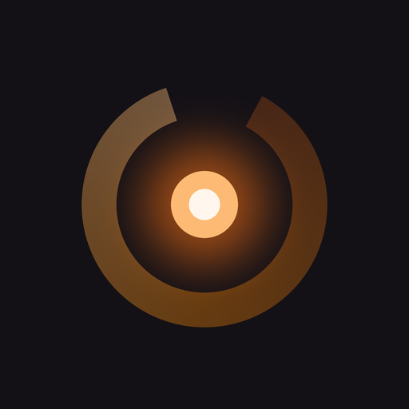
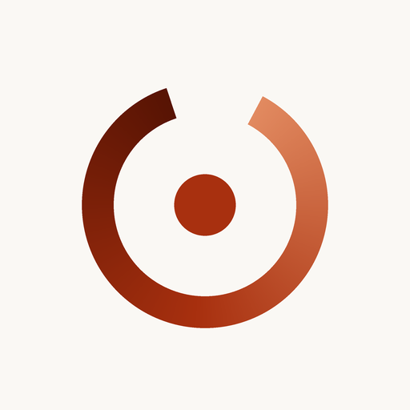
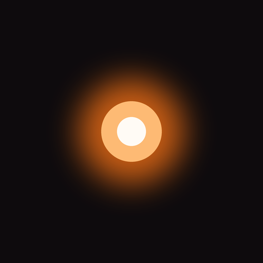
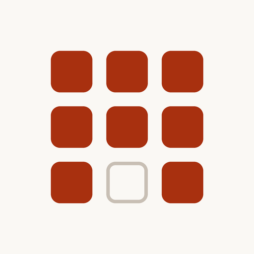

EMBER
6案です。アイコンは拡大して眺めるものではないので、まず一番上の「ホーム画面での見え方」で判断してください。 実寸60pxで、iOSと同じ角丸を当てて、壁紙の上に並べてあります。番号で指定いただければ差し替えます。

A 熾火の輪
B 輪・紙地
E 一点
F グリッド壁紙の上に並べた状態。周囲のアプリに埋もれないかを見てください
A
熾火の輪（現状）
閉じていない輪と、中心で光る熾火。輪が閉じないのは「まだ終わっていない」という意味です。上部が暗く、下部が明るいのは、火が回っていく途中を表しています。
B
輪・紙地
Aと同じ図案を、ライトテーマの紙色に載せたもの。アプリを開いたときの画面と地の色が一致するので、起動の瞬間につながりが生まれます。
C
モノグラム E
セリフ体の頭文字と、下の細い罫線。Editorial のデザインをそのままアイコンに落としたものです。絵で説明せず、文字だけで立たせています。
D
炎
最も直球。暖色の地に白抜きの炎で、遠目でも何のアプリか分かります。ホーム画面で最も見つけやすいのはこれです。
E
一点
暗闇に灯る火種ひとつ。輪も文字もなく、光だけ。Ember という言葉の最短の翻訳です。
F
記録グリッド
アプリ内のカレンダーをそのまま図案化。1マスだけ空いているのは「今日はまだ終わっていない」を表しています。アイコンを見た瞬間に埋めたくなる、という仕掛けです。